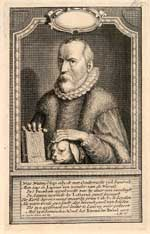

Justus Lipsius 1606 – 2006
Samenstelling: Jeanine de Landtsheer en A.Th. Bouwman
De webpresentatie behandelt de volgende onderwerpen:
13. Lipsius in beeld
Als vermaard geleerde zat Lipsius verschillende malen model voor geschilderde portretten, menigmaal nagevolgd in gravures. Het vroegst bekende portret geeft Lipsius weer op 36-jarige leeftijd, maar is alleen bekend uit een gravure van Vorsterman. Andere gravures zijn eveneens vervaardigd door vermaarde kunstenaars, zoals Crispijn de Passe en Cornelis Galle. Na Lipsius’ overlijden hebben ook grote schilders als Rubens en Van Dijck alsnog zijn portret geschilderd aan de hand van bestaande gravures. Grote bekendheid verwierf het groepsportret ‘de vier filosofen’ – Lipsius en drie van zijn geleerde vrienden – van de hand van Rubens. De Leidse universiteit bestelde na Lipsius’ overlijden alsnog een portret. De hoon die Lipsius trof van de zijde van Noord-nederlanders vond zelfs in de achttiende eeuw nog navolging in een portret met een anti-katholiek gedicht.
|
13.1 || Cr. De Passe, Portret van Justus Lipsius op 40-jarige
leeftijd. Burijngravure. 1587. [Leiden, AHM, inv. BN 858]. –– Lipsius met boek in de hand en andere hand op de kop van zijn hond Melissa. |
|
13.2 || A. van der Laan, Portret van Justus Lipsius; met anti-katholiek vers. Burijngravure. 1733. [Leiden, AHM, inv. BN 862]. –– De prent is afkomstig uit G. Outhof, Levensbeschryving van beroemde en geleerde mannen (Amsterdam: A. Wor, 1730-1733). |
|
|  | |
|
13.3 || B. Dolendo, Portret van Justus Lipsius op 43-jarige leeftijd. Burijngravure. 1591. [PK-P-Sin18.358]. –– Lipsius met hand op zijn Politica en met wapen op de achtergrond. |
|
13.4 || C. Galle, Lipsius in lauwerkrans naar P.P. Rubens. Burijngravure. 1605. [Leiden, AHM, BN 864]. –– De Antwerpse drukker Jan Moretus gebruikte de gravure als frontispice bij de latere edities van de door Lipsius bezorgde uitgave van Seneca’s filosofische werken (16152). |
|
13.5 || F. Gregori, Groepsportret van Lipsius, F. Rubens, P.P. Rubens en J. Woverius. Gravure. ca. 1750. [PK-P-I 174 GRE/1]. –– Afbeelding geïnspireerd op het schilderij ‘De vier filosofen’ van Peter Paul Rubens, vervaardigd in 1611-1612. Ten onrechte wordt de figuur rechts (Woverius) geïdentificeerd met Hugo Grotius. |
|
13.6 || S.A. van Bolswert, Portret van Lipsius naar A. van Dyck. Burijngravure. [Leiden, AHM, inv. BN 875]. –– Portret van Lipsius als docent uit Icones principum virorum doctorum (Antwerpen: G. Hendricx, 1640-1641), door Schelte Adamsz. à Bolswert (1586-1659) naar een schilderij van Antoon van Dyck (1599-1641). |
|
13.7 || Anoniem, Portret van Lipsius. Schilderij op paneel 1609. [Icones 39]. –– Nadat Lipsius in 1606 overleden was, werd in opdracht van de curatoren van de Leidse universiteit zijn portret geschilderd. |
|
| vorige pagina | |